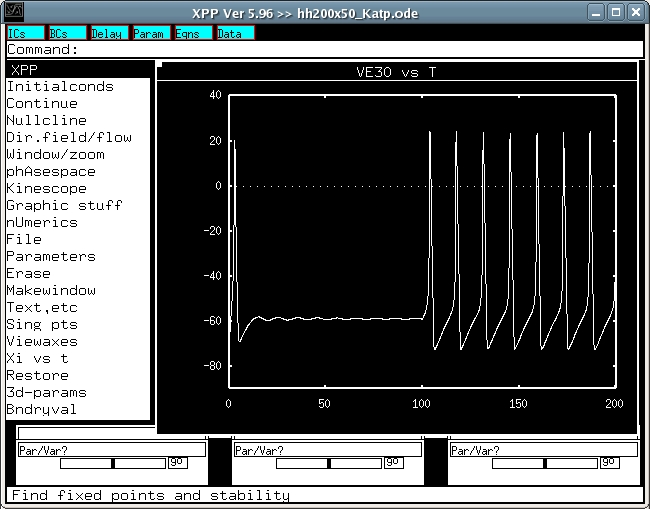

This is the readme.txt for the models associated with the paper Huang CW, Cheng JT, Tsai JJ, Wu SN, Huang CC. Diabetic hyperglycemia aggravates seizures and status epilepticus-induced hippocampal damage. Neurotox Res (2009) 15:71-81. Abstract: Epileptic seizures in diabetic hyperglycemia (DH) are not uncommon. This study aimed to determine the acute behavioral, pathological, and electrophysiological effects of status epilepticus (SE) on diabetic animals. Adult male Sprague-Dawley rats were first divided into groups with and without streptozotocin (STZ)-induced diabetes, and then into treatment groups given a normal saline (NS) (STZ-only and NS-only) or a lithium-pilocarpine injection to induce status epilepticus (STZ + SE and NS + SE). Seizure susceptibility, severity, and mortality were evaluated. Serial Morris water maze test and hippocampal histopathology results were examined before and 24 h after SE. Tetanic stimulation-induced long-term potentiation (LTP) in a hippocampal slice was recorded in a multi-electrode dish system. We also used a simulation model to evaluate intracellular adenosine triphosphate (ATP) and neuroexcitability. The STZ + SE group had a significantly higher percentage of severe seizures and SE-related death and worse learning and memory performances than the other three groups 24 h after SE. The STZ + SE group, and then the NS + SE group, showed the most severe neuronal loss and mossy fiber sprouting in the hippocampal CA3 area. In addition, LTP was markedly attenuated in the STZ + SE group, and then the NS + SE group. In the simulation, increased intracellular ATP concentration promoted action potential firing. This finding that rats with DH had more brain damage after SE than rats without diabetes suggests the importance of intensively treating hyperglycemia and seizures in diabetic patients with epilepsy. -------------------------- To run the model: XPP: start with the command xpp ode\hh200x50_Katp.ode (or xppaut hh200x50_Katp.ode) Mouse click on Xi vs t, and change to VE30 then, click on Initialconds, and then (G)o. This makes a trace similar to fig 6A in the paper of Huang et al.  Mouse click Viewaxes, and Array. After appropriate changes, a figure similar to Fig 6B should appear. Bard Ermentrout's website http://www.pitt.edu/~phase/ describes how to get and use xpp (Bard wrote xpp). The model file was submitted by: Dr. Sheng-Nan Wu Department of Physiology Natl Cheng Kung U Med Coll Tainan 70101, Taiwan